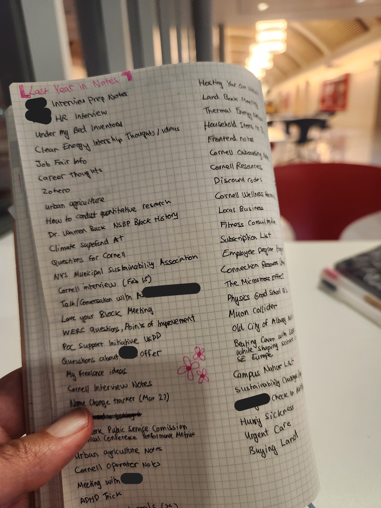

Three things you will likely find on me: headphones, a pen and my 24hr week at a glance planner. The back of my planner has become a repository of the lunch-and-learns, seminars and meetings I have attended of the year. In 2024, I made a summary of my 2023 happenings in my 2024 planner - "a YouTube Music Recap" of sorts. (I refuse to use Spotify). And so since this is the time of year people share those sorts of things on their feeds, I thought I would share my "2024 in Notes" with you.
The year started off well with a climate focused internship in tow and my permanent job search picking up the pace. The new year also seems to be the part of the year where I like to make new connections and check in on old ones.
In the summer, I hit the ground running learning as much as I could about my new workplace and all the resources it had to offer: from discounts to degrees! Note taking slowed down once it got colder, in part, because I was running out of space (A first in my 7 years of back of the planner notes!). In winter, I don't mind restricting the flow of information and allowing what I have learned to sink in.
Now in 2025, I have already started dotting my calendar with seminars. They are mostly science ones, which don't make it to the back of my planner. (I write way too many notes on those to squeeze them there. ) I also hope to keeping more track of my own ideas and compiling more resource lists for reference.